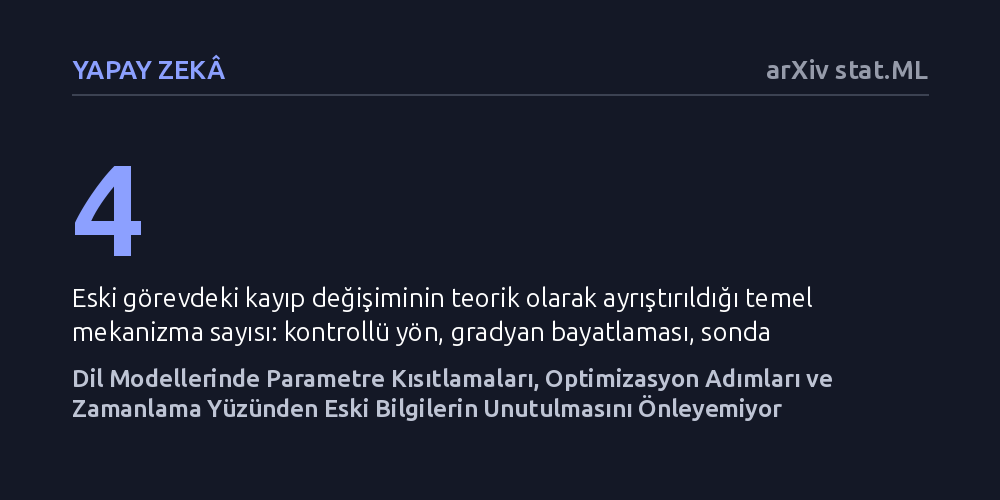

YAPAY-ZEKA · arXiv stat.ML · 2026-10-24
Araştırmacılar, dil modellerine yeni görevler öğretilirken kısıtlamalara rağmen eski bilgilerin neden unutulduğunu işlevsel yol analiziyle araştırdı. Kısıtlamaların optimizasyon algoritmasından önce veya sonra uygulanmasının ve eğitim adımlarındaki yörünge sapmalarının unutmayı tetiklediği belirlendi.
Yapay zeka modellerine yeni beceriler kazandırırken sadece parametreleri kısıtlamanın yetmediğini, korumanın optimizasyon sürecinin neresinde ve nasıl yapıldığının belirleyici olduğunu gösteriyor.

Büyük dil modellerini belirli bir uzmanlık alanına uyarlamak için gözetimli ince ayar yöntemi sıkça kullanılır. Ancak bu süreçte model, daha önce edindiği genel veya kritik yetenekleri kısmen ya da tamamen kaybedebilir. Araştırmacılar yapay zekanın eskiyi unutarak yeniyi öğrenmesi sorununa odaklanıyor. Bugüne kadar geliştirilen yaygın koruma yaklaşımları parametreleri sabitleyerek, gradyanları sınırlayarak veya eski verilerden örnekler tekrarlayarak bu kaybı durdurmaya çalışıyordu.
Ne var ki pratikte bu kısıtlamalar uygulandığında bile modellerin eski becerileri neden kaybetmeye devam ettiği kuramsal olarak net değildi. Korunan parametreler ile modelin nihai yanıtları arasındaki nedensellik bağı kurulamıyordu. Bu sorunun çözülmesi, yapay zekanın her yeni görevde baştan eğitilmek zorunda kalmadan, bilgilerini kümülatif olarak biriktirebilmesi açısından kritik bir önem taşımaktadır.
Araştırmacılar, kısıtlamalara rağmen süregiden bu unutma olgusunu çözmek için "işlevsel yol analizi" adını verdikleri analitik bir çerçeve geliştirdi. Bu yöntem, model yeni göreve uyarlanırken gerçekleşen her bir güncelleme adımı boyunca eski görevdeki performans kaybını adım adım inceliyor. Böylece toplam kayıp tek bir soyut değer olmaktan çıkarılarak kontrollü yön, gradyan bayatlaması, sonda uyuşmazlığı ve sonlu adım etkileri olmak üzere dört somut etmene ayrıştırılıyor.
Araştırma ekibi bu teorik çerçeveyi sınamak amacıyla QLoRA mimarisi üzerinde kontrollü deneyler tasarladı. Deneylerde kısıtlamaların optimizasyon algoritmasından (Adam) önce mi yoksa sonra mı uygulanacağı ayrıştırıldı ve modelin ara kontrol noktalarındaki üretimleri kaydedildi. Ayrıca eski verilerin modele hangi sıklıkla ve ne şekilde hatırlatılması gerektiği sistematik programlarla test edildi.
Elde edilen bulgular, kısıtlamanın nereye yerleştirildiğinin eski bilgilerin korunmasında belirleyici olduğunu gösterdi. Kısıtların Adam optimizasyonundan önce veya sonra devreye sokulması, incelenen kod ve etiketleme denetimlerinde bilgi koruma oranını doğrudan etkiledi. Buna karşılık kısıtlamanın ne kadar ayrıntılı yapıldığı yalnızca varış noktasındaki sonuca bağlı kalarak ikincil bir etkide bulundu.
Çalışma, eğitim sonundaki nihai skorların yanıltıcı olabileceğini ve eğitim yörüngesi boyunca gerçekleşen performans kayıplarını gizlediğini ortaya koydu. Görevlerin art arda eklendiği sıralı senaryolarda, alt-uzay düzenlileştirmesi ortalama korumayı yükseltse de eski görevler arasında dengesizlik yarattı. Gözetimli veri tekrarının ise görevleri birbirine feda etmeden daha dengeli ve tutarlı bir şekilde koruduğu tespit edildi.
Bu bulgular, yapay zeka modellerinde unutmayı önlemenin yalnızca ağırlıklara veya gradyanlara genel kısıtlar koyarak başarılamayacağını ortaya koyuyor. Optimizasyon algoritmasının iç dinamikleri ve eğitim boyunca izlenen yörünge doğrudan hesaba katılmak zorunda. Yazarlar bu sorunun aşılması için "açık işlevsel çıpalar, yörünge değerlendirmesi ve eski-yeni ortak denetimleri" gerektiğini savunuyor.
Pratik açıdan bakıldığında, modelleri yeni uzmanlıklara uyarlarken yalnızca eğitimin sonundaki başarı tablosuna güvenmenin eksik olduğu anlaşılıyor. Gelecekteki ince ayar yöntemlerinin, eğitim sırasındaki anlık sapmaları denetleyen ve optimizasyon sırasını doğru konumlandıran işlevsel yaklaşımlarla tasarlanması gerekiyor.